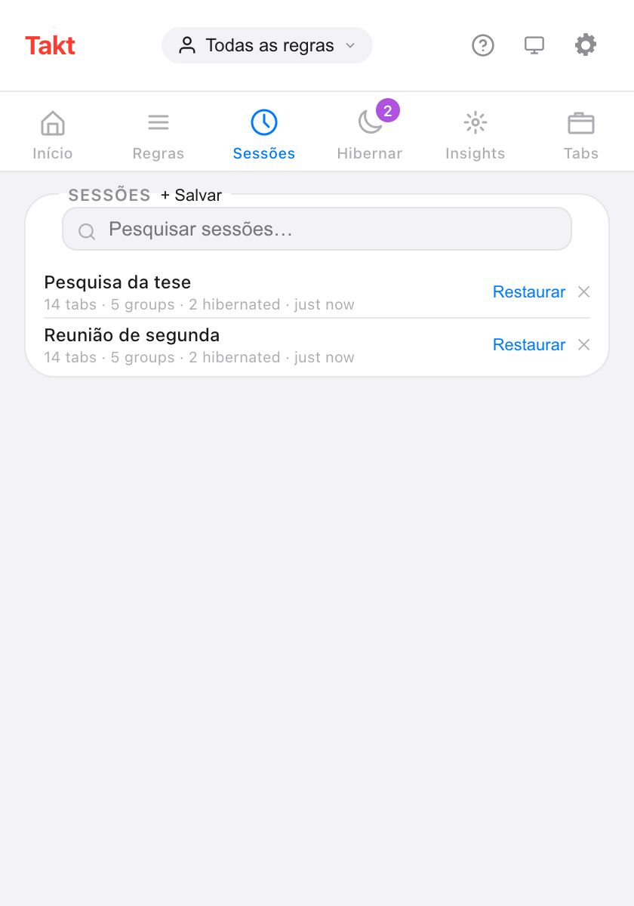
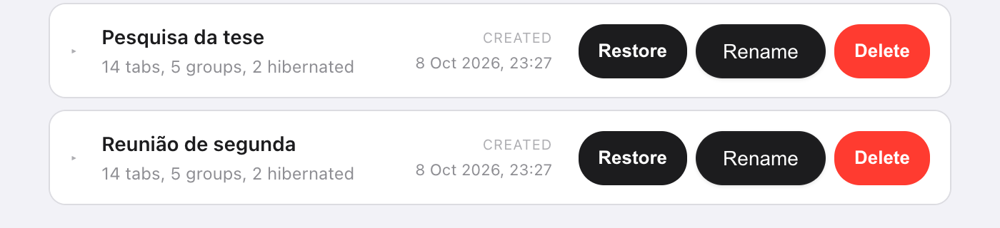

Resposta curta: no popup do Takt, abra Sessões, clique em + Salvar, dê um nome e escolha Esta janela ou Todas as janelas. Depois, clique em Restaurar para ter as mesmas abas de volta, dentro dos mesmos grupos com nome e cor.
- Salva todas as abas, todos os grupos (nome, cor, estado recolhido), as abas soltas e a sua lista de abas hibernadas.
- Restaure numa nova janela, ou substitua a atual.
- Até 50 sessões, guardadas no seu computador. Premium
Por que o "Continuar de onde parei" do Chrome não basta?
Para uma tarefa, basta. Ative-o e o Chrome reabre as abas da sua última sessão ao iniciar. Se isso é tudo de que você precisa, você não precisa de extensão.
Ele deixa de funcionar quando você alterna entre trabalhos diferentes. As abas da sua tese, as da reunião de segunda e as do planejamento da viagem não podem ser todas "a última sessão". Feche a janela da tese para abrir espaço para a reunião, e as abas da tese somem dessa lista.
Uma sessão com nome é um favorito para um espaço de trabalho inteiro. Você fecha a janela sem preocupação, porque pode trazê-la de volta pelo nome.
Como salvo uma sessão de abas?
- Instale o Takt pela Chrome Web Store.
- Abra o popup e vá ao painel Sessões.
- Clique em + Salvar e digite um nome de até 60 caracteres. Os nomes não podem se repetir.
- Escolha Esta janela (o padrão) ou Todas as janelas e clique em Salvar.

O que uma sessão guarda?
| Salvo | Detalhes |
|---|---|
| Abas | URL e título de cada aba |
| Grupos de abas | Nome, cor, estado recolhido e quais abas pertencem a cada um |
| Abas soltas | As abas fora de qualquer grupo |
| Janelas | Uma janela, ou todas as janelas normais com Todas as janelas |
| Abas hibernadas | Sua lista de abas hibernadas, que volta para lá ao restaurar |
O Chrome não deixa extensões abrirem páginas chrome://, about: nem de extensões, então essas abas ficam de fora.
Como restauro uma sessão?
Clique em Restaurar. Uma caixa de diálogo oferece dois modos:
- Abrir em nova janela. Sua janela atual fica como está.
- Substituir janela atual. As abas salvas abrem na janela atual, e depois as abas que estavam ali se fecham.
A caixa de diálogo faz uma contagem regressiva de 7 segundos e então restaura no modo selecionado. Clique em Restaurar na caixa para não esperar, ou em Cancelar. Numa sessão com várias janelas, a primeira janela segue a sua escolha e todas as outras abrem como janelas novas.
Posso renomear sessões ou salvá-las automaticamente?
As duas coisas.
- Renomear: clique duas vezes num nome no popup, ou use Rename na aba Sessions da página de opções. Pressione Enter para salvar.
- Salvar automaticamente: ative Guardar automaticamente ao fechar janela em Settings. Fechar uma janela salva as abas dela como uma sessão chamada "Guardado automático" seguido da data e da hora.
A página de opções também deixa você expandir uma sessão para ver todos os grupos e abas dentro dela antes de restaurar.

Sessões do Takt vs. as opções que já vêm no Chrome
| "Continuar de onde parei" do Chrome | Sessões do Takt | |
|---|---|---|
| Quantas | A última sessão | Até 50, com nome |
| O que guarda | As abas que você tinha abertas da última vez | Qualquer retrato que você salvou, ou um salvamento automático quando uma janela fecha |
| Quando restaura | Quando o Chrome inicia | Sempre que você clica em Restaurar |
| Custo | Grátis, já vem no Chrome | Premium |
O que as sessões não fazem
- Elas ficam neste computador. As sessões ficam no armazenamento local do Chrome e não acompanham sua conta do Google. Para levá-las para outro lugar, use um backup ou a sincronização.
- Elas são retratos. Uma sessão salva não muda quando você muda a janela. Salve de novo com outro nome para guardar uma versão mais nova.
- O limite é 50. Exclua as antigas para abrir espaço. Os salvamentos automáticos substituem o salvamento automático mais antigo, nunca uma sessão que você nomeou.
- Sem o estado da página. Restaurar reabre as URLs. O conteúdo de formulários e a posição de rolagem não são salvos.
Feche a janela. Guarde o trabalho.
Adicionar o Takt ao Chrome, grátisPerguntas frequentes
O Chrome salva sessões de abas sozinho?
"Continuar de onde parei" reabre sua última sessão quando o Chrome inicia. Ele guarda essa única sessão, não uma lista de retratos com nome.
Quantas sessões posso salvar no Takt?
Até 50. Quando a lista estiver cheia, exclua antes uma sessão mais antiga. Os salvamentos automáticos abrem espaço substituindo o salvamento automático mais antigo.
As sessões de abas são gratuitas no Takt?
Não. Salvar, restaurar, renomear e salvar automaticamente são Premium (US$ 3/mês ou US$ 30/ano). No plano gratuito, você pode ver a lista de sessões salvas.
Minhas sessões são enviadas para algum lugar?
Não. Elas ficam no armazenamento local do Chrome, no seu computador. Só saem dele se você exportar um backup ou ativar o File Sync ou o Drive Sync. Veja como o Takt mantém os dados no seu computador.